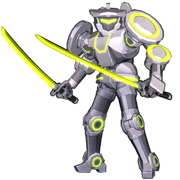

Middleman
背景

很久很久以前，人类发现了一件天界遗物，并利用其中的天使之力创造出一艘巨舰，用于探索浩瀚宇宙。这艘被昵称为“Babel”的庞然巨舰将人类带到远远超出故土的地方，使他们能够殖民其他星球，并把势力范围扩张到星际尺度。
最终，人类找到了宇宙的边缘。在那里，他们脆弱的心智无法承受眼前的领域，只能称其为“天堂”。随后，一个看似无害的存在入侵了天界领域，并遇见了更高位阶的实体，一位天使。该存在许下愿望，天使予以实现。这个愿望显化为一团黑暗、阴险的力量，拥有宇宙尺度的毁灭潜能。那是一种会腐化并衰败任何接触之物的力量。
Megium 的力量。
人类的巨舰随近半个天界领域一同被毁。天堂碎片散落到宇宙各处，落入许多人类星际殖民地手中，让他们得以接触浩瀚的天使之力。ERNA 组织因此成立，目标是收集并占有尚未被发现的众多天堂碎片，并招募被天界力量祝福者加入队伍。
在 ERNA 成立早期，天使资源有限，该派系让被征召的人类士兵接受重度赛博强化，将他们改造成几乎不剩多少人性的机器人超级战士。最初构建的系列是为了给 ERNA 未来方向定调，因此以“方向”为主题。于是，七名机械士兵开始在 ERNA 精英队伍中服役：The Frontman、The Backman、The Leftman、The Rightman、The Upman、The Downman，以及最后的 The Middleman。
多年后，ERNA 能够利用回收来的天堂碎片建造庞大军队，其力量远超这些赛博士兵，七个单位也逐渐被边缘化。到了那时，当七名士兵反叛该派系时，ERNA 要么没有注意到，要么根本不在乎。它们各自走上自己的道路，对 ERNA 的蔑视和仇恨只会越来越深。
策略
Middleman 是第一个快节奏 Boss，会持续冲锋并用双剑斩击对手。战斗中，他会高高跃入空中，然后选择飞回地面踢击，或向对手发射穿透激光。Middleman 专精近距离战斗，大多数攻击都会让他扑向对手，从而快速拉近距离。
统计
基础 HP：7800
伤害：物理和电击
| 属性 | 抗性 |
|---|---|
| 物理 | 中性 (1x) |
| 火焰 | 弱点 (1.25x) |
| 冰霜 | 中性 (1x) |
| 电击 | 弱点 (1.5x) |
| 光耀 | 抗性 (0.5x) |
| 暗影 | 弱点 (1.25x) |
| 毒 | 抗性 (0.75x) |